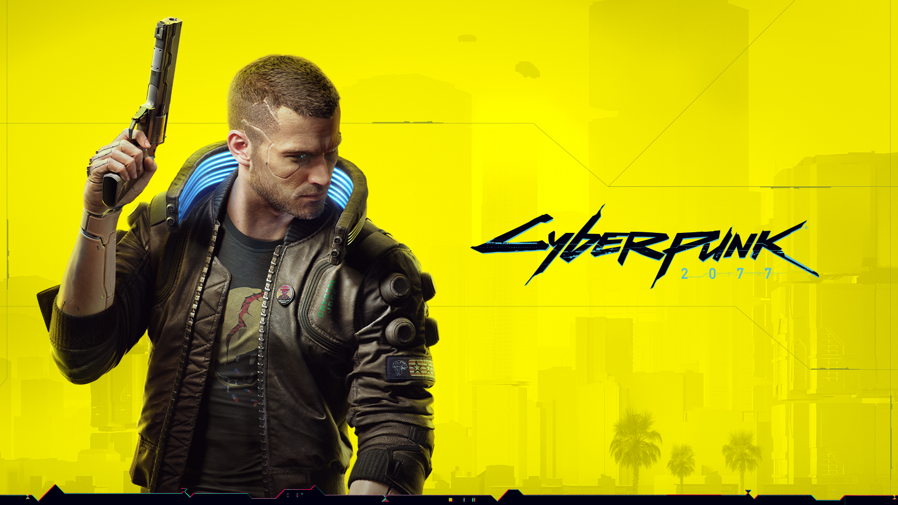

Mas recebe spin-off beat-em-up estilo Streets of Rage
Divulgação / Gamejolt
Segundo Scott Cawthon, desenvolvedor de Five Nights at Freddy's: Security Breach foi adiado, mas como prêmio de consolação lançou gratuitamente um beat-em-up estilo Streets of Rage, Security Breach: Fury's Rage.
Cawthon postou no Reddit de Security Breach na última quarta-feira (28) que "o começo de 2021 não é mais uma janela de lançamento viável", e que optou por dedicar mais tempo para lançar a sequência de Five Nights at Freddy's com a qualidade que ele deseja para o jogo.
Para não deixar a comunidade completamente desamparada, em um lançamento surpresa ele disponibilizou no site gamejolt.com o Security Breach: Fury's Rage, um beat-em-up side-scroller gratuito que, apesar dos personagens, Cawthon deixou bem claro que o nome do jogo não remete a "furry".
Five Nights at Freddy's: Security Breach foi anunciado em 2019 e segue sem data de lançamento, mas chegando para PC, PlayStation 4 e PlayStation 5.
Cyberpunk 2077 recebe mais uma atualização com correções de bugs
O patch 1.22 já está disponível gratuitamente para download
Autoria própria
CD Projekt Red anunciou nesta quarta-feira (28) a chegada do Hotfix 1.22, mais uma atualização para Cyberpunk 2077 para adicionar correções relacionadas a bugs e melhorias de estabilidade.
O patch já está disponível gratuitamente para download.
Alguns do erros corrigidos incluem bugs na aparência de Johnny Silverhand e outros que afetavam o progresso do jogador em missões específicas, como não poder interagir com um objeto importante e não conseguir usar elevadores. Além de melhorias de gerenciamento de memória e mais otimizações.
É possível conferir a lista completa clicando aqui.
Cyberpunk 2077 está disponível para Xbox One, PC e PS4, sendo que este último apenas em versões físicas.
Among Us chegará ao PS4 e PS5 neste ano com skin de Ratchet & Clank
Imagem: PlayStation/Reprodução
A PlayStation revelou, nesta quinta-feira (29), durante o evento State of Play, que Among Us chegará ainda este ano para o PS4 e PS5. O jogo será lançado para os consoles junto de uma skin especial de Ratchet & Clank. Veja, a seguir, as primeiras imagens sobre a novidade.
A skin será exclusiva para os consoles da Sony. Não foi informado, por enquanto, a data exata em que o título multiplayer chegará para as novas plataformas.No ano passado, a Microsoft já havia anunciado o jogo para Xbox One e Xbox Series X/S.
Apesar de ter sido lançado em 2018, o game se tornou um enorme sucesso no ano passado. Milhares de pessoas descobriram o título durante a pandemia e passaram a jogar com amigos e desconhecidos para tentar desmascarar o impostor.
Atualmente, Among Us está disponível para smartphones (Android e iOS) e PC.
Cyberpunk 2077 está de volta à PS Store pelo preço cheio

Imagem: Cyberpunk 2077
Cyberpunk 2077 regressa à PlayStation Store e está disponível mundialmente, como previsto. O título havia sido removido da loja digital em dezembro de 2020.
Você pode jogar o título no PS4, PS4 Pro e no PlayStation 5. Além disso, uma atualização gratuita para a nova geração estará disponível para todos os proprietários da versão PS4 de Cyberpunk 2077 no segundo semestre de 2021. A atualização permitirá que o jogo aproveite ao máximo o hardware mais poderoso do novo console.
Os jogadores podem continuar a ter alguns problemas de desempenho com a edição PS4 enquanto a CD Projekt RED continua a melhorar a estabilidade em todas as plataformas. As versões PS4 Pro e PS5 do jogo proporcionarão a melhor experiência no PlayStation. Note que a descrição do produto na PS Store possui o mesmo alerta.
Além disso, Cyberpunk 2077 encontra-se por R$ 249,50 na PS Store – basicamente seu preço de lançamento. A edição física possui um preço muito menor, estando atualmente por R$ 59,85 na Amazon, por exemplo.